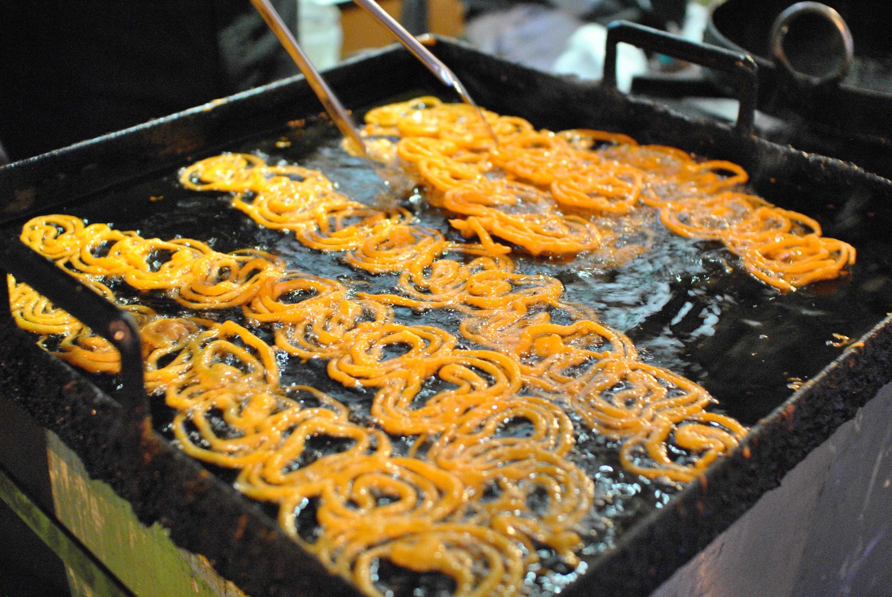
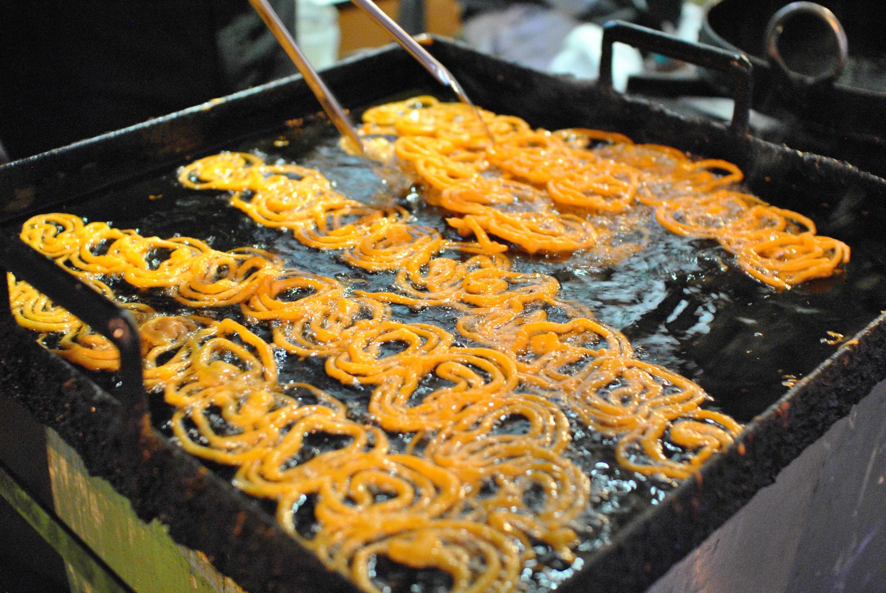

Food and Cuisine
Indian cuisine consists of a variety of regional and traditional cuisines native to the Indian subcontinent. Given the diversity in soil, climate, culture, ethnic groups, and occupations, these cuisines vary substantially and use locally available spices, herbs, vegetables, and fruits. Indian food is also heavily influenced by religion, in particular Hinduism, cultural choices and traditions. Centuries of Islamic rule, particularly by the Mughals, also introduced dishes like samosa and pilaf.Historical events such as invasions, trade relations, and colonialism have played a role in introducing certain foods to this country. The Columbian discovery of the New World brought a number of new vegetables and fruit to India. A number of these such as the potato, tomatoes, chillies, peanuts, and Guava have become staples in many regions of India.Indian cuisine has shaped the history of international relations; the spice trade between India and Europe was the primary catalyst for Europe's Age of Discovery.Spices were bought from India and traded around Europe and Asia. Indian cuisine has influenced other cuisines across the world, especially those from Europe (especially Britain), the Middle East, Southern African, East Africa, Southeast Asia, North America, Mauritius, Fiji, Oceania, and the Caribbean.Indian cuisine reflects an 8,000-year history of various groups and cultures interacting with the Indian subcontinent, leading to diversity of flavours and regional cuisines found in modern-day India. Later, trade with British and Portuguese influence added to the already diverse Indian cuisine. Click to read more